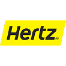
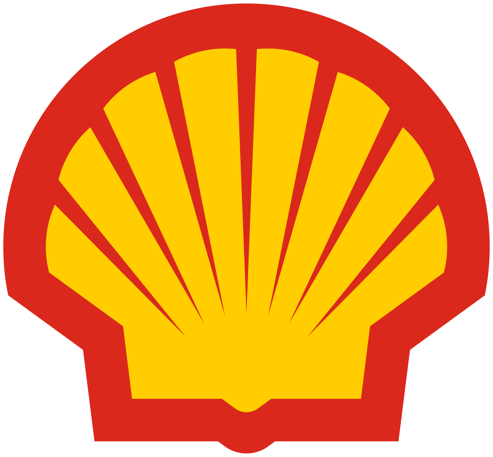
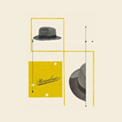
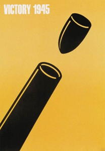
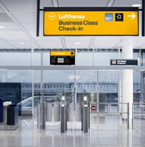

Esempi di utilizzo nella comunicazione visiva
Jim Schindler
Marchio McDonald's, 1962

Landor Associates
Marchio Hertz, 2010

Raymond Loewy
Marchio Shell, 1971

Max Huber
Manifesto per Borsalino, 1949

Shigeo Fukuda
Manifesto "Victory 1945", 1975

Lufthansa
Wayfinding system
